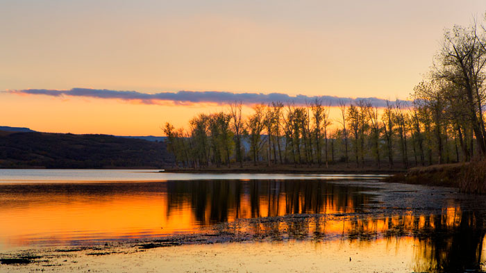
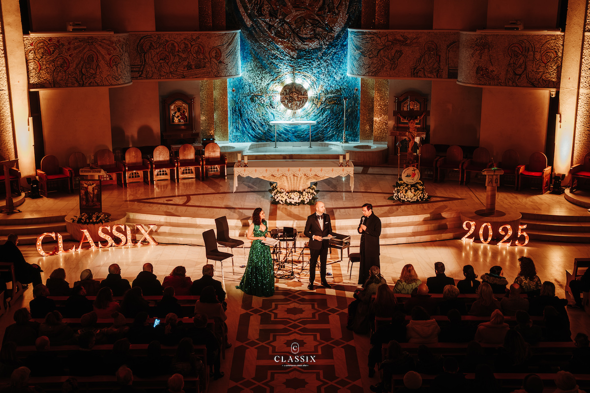
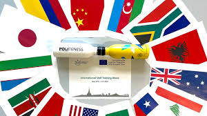
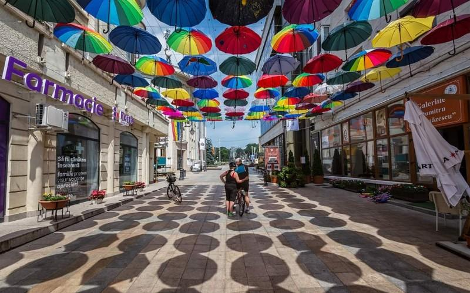
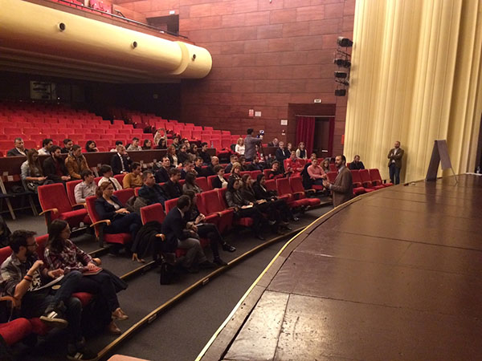
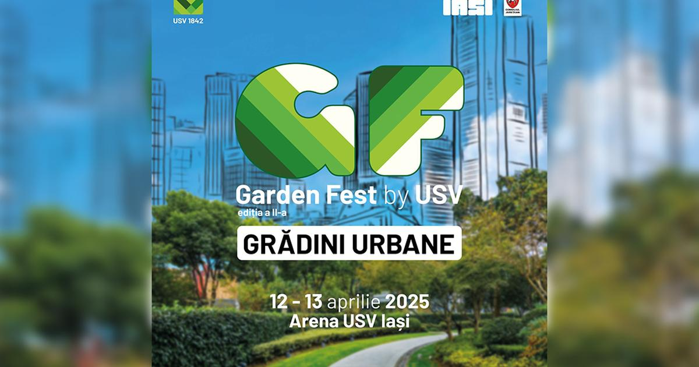

Perioadă: 10–11 august 2025
Locație: Pădurile Ciric – Iași
Descriere: Tură de drumeție și ateliere de dezvoltare personală în aer liber – o oportunitate de reconectare cu natura și cu alți absolvenți.

Perioadă: 1–6 iunie 2025
Locație: Ateneul Național din Iași
Descriere: Experiență muzicală de vară pentru absolvenți și familii – sesiuni de muzică clasică reinterpretată și networking cultural.

Perioadă: 2–6 iunie 2025
Locație: Universitatea „Alexandru Ioan Cuza” din Iași
Descriere: Program internațional de formare pentru absolvenții implicați în educație și cercetare, cu focus pe incluziune și diversitate.

Perioadă: 27–28 iunie 2025
Locație: Palas Iași
Descriere: Eveniment artistic care transformă orașul într-o galerie colorată, ideal pentru întâlniri între alumni și cadre universitare.

Perioadă: 18 iulie 2025
Locație: Sala Studio, Casa de Cultură a Studenților
Descriere: Proiecție multimedia cu fotografii, interviuri și amintiri din perioada studenției – o seară de conexiuni emoționale și networking relaxat.

Perioadă: 12–13 aprilie 2025 (Include perioada de pregătire în mai)
Locație: Stadionul Universității de Științele Vieții „Ion Ionescu de la Brad”
Descriere: Festival urban cu tematică verde dedicat alumni, promovând sustenabilitatea și inovația academică.
